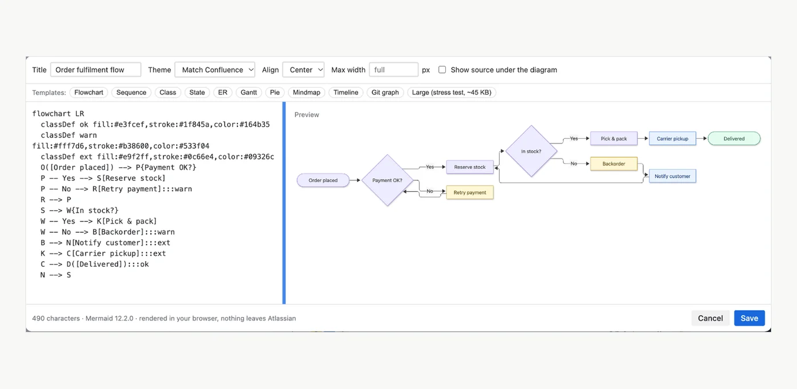
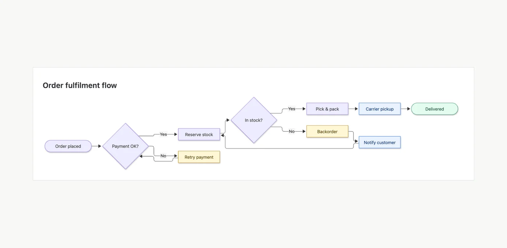

Guide · Confluence Cloud
How to add Mermaid diagrams to Confluence Cloud pages
Mermaid turns a few lines of text into flowcharts, sequence diagrams, timelines and more. Confluence Cloud does not draw Mermaid on its own: pasted into a page, the code stays code. Here is how to get real diagrams on your pages and keep them editable as text.
Why text diagrams work well in Confluence
- Easy to update. Rename a step or add an arrow by editing a line, instead of redrawing boxes.
- Versioned with the page. When the diagram is part of the page, Confluence page history covers it too.
- Reusable. The same Mermaid code works in GitHub, GitLab, Notion and many other tools.
Step by step with Mermaid Diagrams Live Editor for Confluence
- A Confluence administrator installs Mermaid Diagrams Live Editor for Confluence from the Atlassian Marketplace. It is free for up to 10 users.
- Edit a page, type
/mermaidand choose Mermaid diagram. The editor opens with an example. - Write or paste your code on the left. The preview on the right updates as you type, and errors show Mermaid’s own message. Templates are there for every common diagram type.
- Optionally set a title, theme (match Confluence, light or dark), alignment and maximum width, then Save. The diagram is drawn as sharp SVG at the page’s full width.

Example
flowchart LR
A([Change requested]) --> B{Risk level?}
B -- Low --> C[Peer review]
B -- High --> D[CAB review]
C --> E{Approved?}
D --> E
E -- Yes --> F[Schedule deployment]
E -- No --> G[Back to requester]
G --> A
F --> H([Change closed])
Tips
- Readers can zoom. Hover over a diagram and click Expand, or double-click it, for a full-screen view with zoom and pan.
- Let people copy the code. Turn on “Show source under the diagram” on reference pages, so readers can reuse it.
- Exports. PDF and Word exports cannot run the code that draws diagrams, so the app exports the title and the Mermaid source instead: the information is never lost.
- Very large diagrams (hundreds of nodes) work, but split them into several macros when you can; they are easier to read.
Questions
Where is the diagram stored?
Inside the page itself, in the macro’s configuration. It is versioned, copied and exported with the page. The app has no servers and sends nothing outside Atlassian.
Which Mermaid version does it use?
The current Mermaid release is bundled with the app, so all diagram types, classDef, style and themes work as documented at mermaid.js.org.
Can I mix Mermaid with Markdown?
Yes: if you write documentation in Markdown, see how to use Markdown in Confluence Cloud. Mermaid code blocks inside Markdown are drawn too.